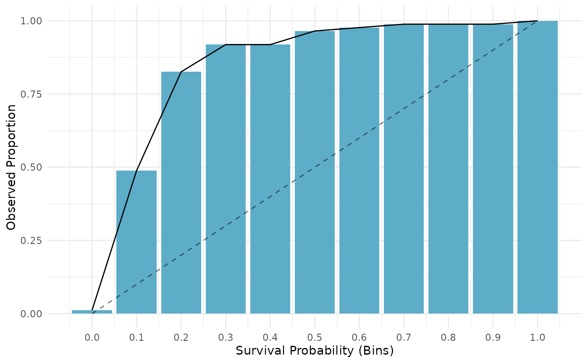
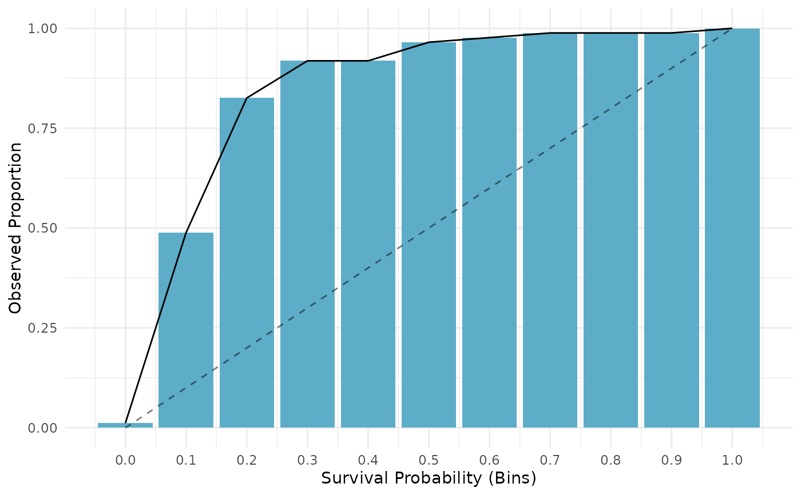

Generates plots for PredictionSurv, depending on argument type:
"calib"(default): Calibration plot comparing the average predicted survival distribution to a Kaplan-Meier prediction, this is not a comparison of a stratifiedcrankorlpprediction.objectmust havedistrprediction.geom_line()is used for comparison split between the prediction (Pred) and Kaplan-Meier estimate (KM). In addition labels are added for the x (T) and y (S(T)) axes."dcalib": Distribution calibration plot. A model is D-calibrated if X% of deaths occur before the X/100 quantile of the predicted distribution, e.g. if 50% of observations die before their predicted median survival time. A model is D-calibrated if the resulting plot lies on x = y."preds": Matplots the survival curves for all predictions
Usage
# S3 method for class 'PredictionSurv'
autoplot(
object,
type = "calib",
task = NULL,
row_ids = NULL,
times = NULL,
xyline = TRUE,
cuts = 11L,
theme = theme_minimal(),
extend_quantile = FALSE,
...
)Arguments
- object
- type
(
character(1))
Name of the column giving the type of censoring. Default is 'right' censoring.- task
(TaskSurv)
Iftype = "calib"thentaskis passed to$predictin the Kaplan-Meier learner.- row_ids
(
integer())
Iftype = "calib"thenrow_idsis passed to$predictin the Kaplan-Meier learner.- times
(
numeric())
Iftype = "calib"thentimesis the values on the x-axis to plot over, ifNULLuses all times fromtask.- xyline
(
logical(1))
IfTRUE(default) plots the x-y line fortype = "dcalib".- cuts
(
integer(1))
Number of cuts in (0,1) to plotdcalibover, default is11.- theme
(
ggplot2::theme())
Theggplot2::theme_minimal()is applied by default to all plots.- extend_quantile
(logical(1))
IfTRUEthendcalibwill impute NAs from predicted quantile function with the maximum observed outcome time, e.g. if the last predicted survival probability is greater than 0.1, then the last predicted cdf is smaller than 0.9 so F^1(0.9) = NA, this would be imputed with max(times). Default isFALSE.- ...
(
any): Additional arguments, currently unused.
References
Haider H, Hoehn B, Davis S, Greiner R (2020). “Effective Ways to Build and Evaluate Individual Survival Distributions.” Journal of Machine Learning Research, 21(85), 1-63. https://jmlr.org/papers/v21/18-772.html.
Examples
library(mlr3)
library(mlr3proba)
library(mlr3viz)
learn = lrn("surv.coxph")
task = tsk("unemployment")
p = learn$train(task, row_ids = 1:300)$predict(task, row_ids = 301:400)
# calibration by comparison of average prediction to Kaplan-Meier
autoplot(p, type = "calib", task = task, row_ids = 301:400)
 # Distribution-calibration (D-Calibration)
autoplot(p, type = "dcalib")
#> Warning: All aesthetics have length 1, but the data has 11 rows.
#> ℹ Please consider using `annotate()` or provide this layer with data containing
#> a single row.
#> Warning: Removed 7 rows containing missing values or values outside the scale range
#> (`geom_line()`).
# Predictions
autoplot(p, type = "preds")

# Distribution-calibration (D-Calibration)
autoplot(p, type = "dcalib")
#> Warning: All aesthetics have length 1, but the data has 11 rows.
#> ℹ Please consider using `annotate()` or provide this layer with data containing
#> a single row.
#> Warning: Removed 7 rows containing missing values or values outside the scale range
#> (`geom_line()`).
# Predictions
autoplot(p, type = "preds")
